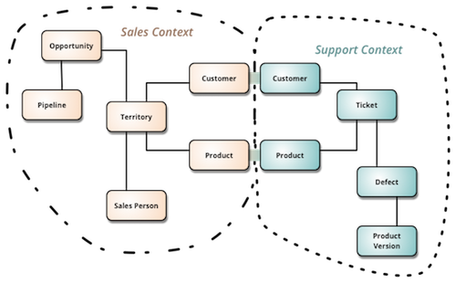
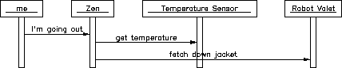
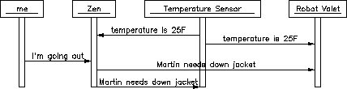

const applyCommand = function (state, command) {
if (!isValid(state))
throw new Error("Nope :(");
return [event, ...];
}
// Similar to Redux!
const applyEvent = (state, event) => newState;applyEvent() of aggregate can be minimalWho should manage all these interactions? 🙄
 Fig 1: Request collaboration
 Fig 2: Event collaboration
konnektid-bus (RabbitMQ)apps/Inventory service (ES + CQRS)GraphQL (facade)api, datamodel, ...Catalogue / Market / Payments serviceMore frequent? Level of detail? Some articles to read? Join discussions and ask questions!